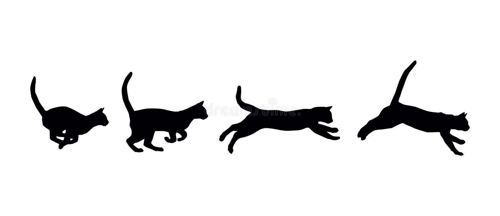

KAĶU FAKTI:
- Kaķiem ir labāka dzirde nekā suņiem.
- Kaķis īsās distancēs var sasniegt ātrumu līdz pat 49 km/h.

- Kaķis pret cilvēku berzējas, ne tikai lai izrādītu mīlestību, bet arī lai iesmaržinātu viņu ar īpašiem dziedzeriem uz galvas, tādējādi iezīmējot savu teritoriju.
- Zinātnieki vēl nav noskaidrojuši, kā tieši kaķis murrā. Lielākā daļa veterinārārstu ir pārliecināti, ka kaķis murrā, izraisot vibrācijas balss saitēs dziļi rīklē. Lai to paveiktu, muskulis balsenē atver un aizver gaisa piekļuvi aptuveni 25
reizes sekundē.
- Lielākais savvaļas kaķis mūsdienās ir Sibīrijas tīģeris. Tas var sasniegt 3,6 metru garumu un svērt līdz pat 317 kilogramiem.
- Kaķiem ir labāka dzirde nekā suņiem.
- Kaķiem ir labāka dzirde nekā suņiem.